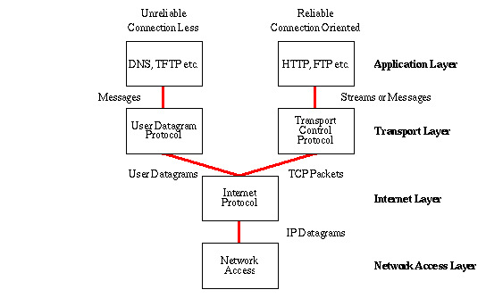

The World Wide Web, also referred to as WWW or W3, is essentially all the websites and web pages that the public can access. The difference between the World Wide Web and the internet is that the internet is a global network composed of various computer networks while the WWW is a system for accessing information on that network. In turn you use the internet to access the WWW since its a specific service that runs on the internet, needed to obtain information.
HTTP (Hypertext Transfer Protocol)- The primary protocol of transmisssion of information throughout the internet. Essential for loading pages via hyperlinks.
TCP/IP (Transmission Control Protocol)- Internet protocol for communication, essential for how data gets transmitted across the internets to various computer networks (makes information accurate/reliable).
DNS (Domain Name System)- Essentially the phonebook of the internet, allows internet users to navigate the internet using hostnames (label specific to a device on network) instead of complicated IP addresses. This makes the process of searching for specific websites a lot easier since you no longer have to memorize long numerical sequences.
